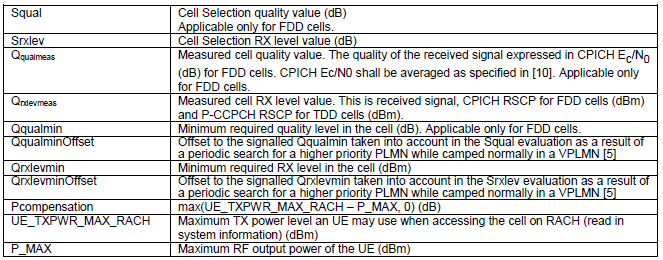
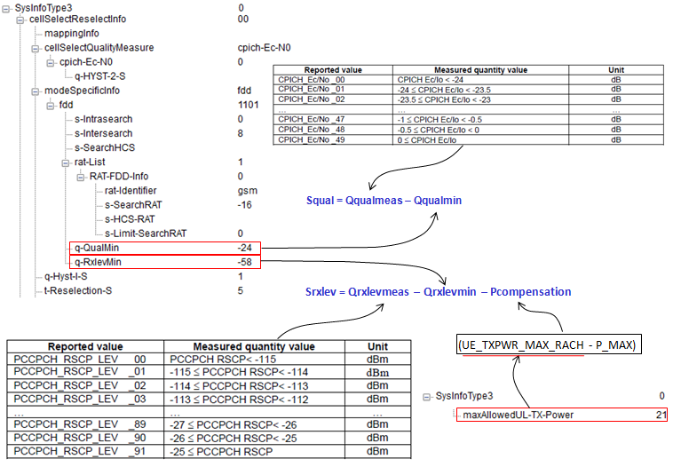

|
UMTS Quick Reference Go Back To Index Home : www.sharetechnote.com |
|
|
Cell Selection Procedure
There are two types of Cell Selections. "Initial Cell Selection" and "Stored Information Cell Selection". Definition of these two methods are described as follows in 25.304 5.2.3 Cell Selection Process.
a) Initial Cell Selection This procedure requires no prior knowledge of which RF channels are UTRA carriers. The UE shall scan all RF channels in the UTRA bands according to its capabilities to find a suitable cell. On each carrier, the UE need only search for the strongest cell. Once a suitable cell is found this cell shall be selected.
b) Stored Information Cell Selection This procedure requires stored information of carrier frequencies and optionally also information on cell parameters, e.g. scrambling codes, from previously received measurement control information elements. Once the UE has found a suitable cell the UE shall select it. If no suitable cell is found the Initial cell selection procedure shall be started.
Cell Selection Criteria
For a cell to be selected, they should meet a certain criteria as follows.
When UE is in HPLMN Squal = Qqualmeas – Qqualmin > 0 Srxlev = Qrxlevmeas – Qrxlevmin + QrxlevminOffset – Pcompensation > 0
When UE is in VPLMN Squal = Qqualmeas – (Qqualmin + QqualminOffset) > 0 Srxlev = Qrxlevmeas – (Qrxlevmin + QrxlevminOffset) – Pcompensation > 0

(In FDD) For a cell to be selected, both Squal and Srxlev should be greater than 0 and these two values are calculated as follows.

< Example >
CPICH_RSCP = -55, Qrxlevmin:-58, UE Power Class:3(P_MAX = 24) UE_TXPWR_MAX_CCH:33 CPICH_Ec/N0:30, Qqualmin:-24
Srxlev = -55 -(-58) -9 (max(33-24,0)) = -6 Squal=(-9.5)-(-24) = 14.5
Squal > 0, Srclev < 0. So The UE ignore this cell.
Intra Search Criteria
When the following condition
When UE is in HPLMN Squal = Qqualmeas – Qqualmin <= s-Intrasearch or s-Intrasearch is not configured
When UE is in VPLMN Squal = Qqualmeas – (Qqualmin + QqualminOffset) <= s-Intrasearch or s-Intrasearch is not configured
If you want to let UE to perform Intracell search all the time, the easiest way would be to set as follows. i) set s-Intrasearch to be MAX value ii) set Qualmin to be MAX value
Intra Search Criteria
When the following condition
When UE is in HPLMN Squal = Qqualmeas – Qqualmin <= s-Intrasearch or s-Intrasearch is not configured
When UE is in VPLMN Squal = Qqualmeas – (Qqualmin + QqualminOffset) <= s-Intrasearch or s-Intrasearch is not configured
If you want to let UE to perform Intracell search all the time, the easiest way would be to set as follows. i) set s-Intrasearch to be MAX value ii) set Qualmin to be MAX value
Inter Search Criteria
When the following condition
When UE is in HPLMN Squal = Qqualmeas – Qqualmin <= s-Intersearch or s-Intrasearch is not configured
When UE is in VPLMN Squal = Qqualmeas – (Qqualmin + QqualminOffset) <= s-Intersearch or s-Intrasearch is not configured
If you want to let UE to perform Intracell search all the time, the easiest way would be to set as follows. i) set s-Intersearch to be MAX value ii) set Qualmin to be MAX value
|